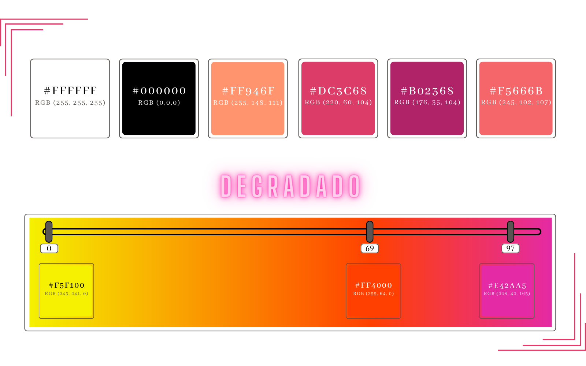
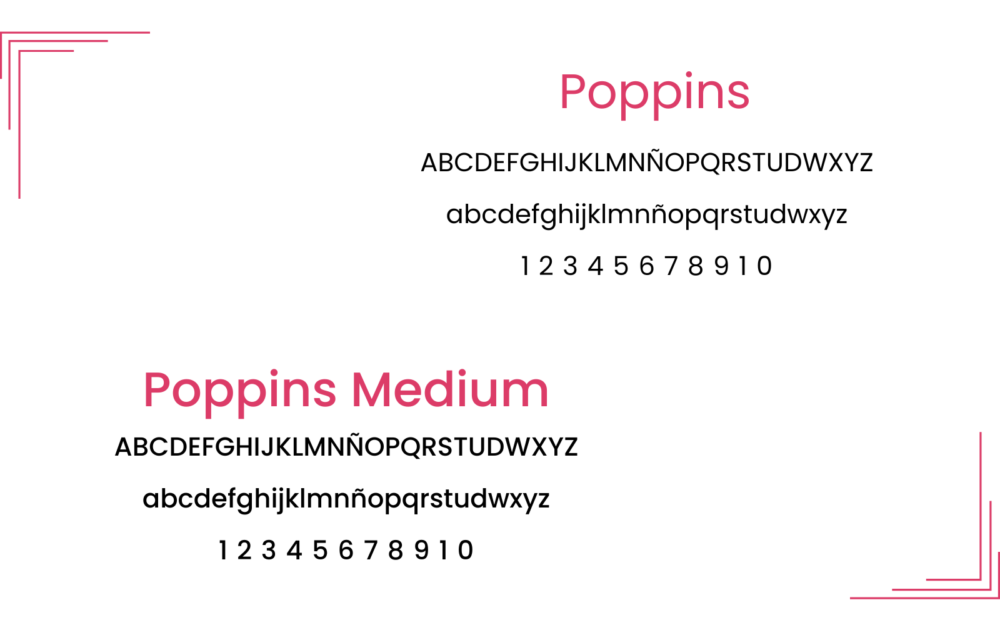

Se optó por la elección del color negro, y en menor medida, el color blanco para los textos del curriculum. Por otro lado, se utilizaron variantes del color rosa porque es un color fuerte que genera contraste con la tipografía.

La tipografía utilizada es la Poppins, debido a que es una tipografía legible, que posee visibilidad al momento de adaptarse a distintos tamaños.
